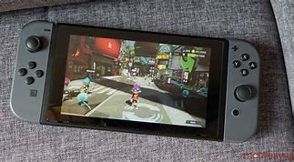

R7 999.00
| STORAGE | BUILD | BOX CONTEXT |
| 32 GB | small | Nintendo Switch Console, Nintendo Switch Dock, Joy-Con Wrist Straps, High Speed HDMI Cable, Nintendo Switch AC Adapter |
(in stock)
It’s a new era where you don’t have to adjust your lifestyle to play games – instead, your console adjusts to fit around your lifestyle. The Nintendo Switch can transform to suit your situation so you can enjoy games anytime, anywhere, with anyone, no matter how busy life may be! The Nintendo Switch has three basic Play Modes: TV mode: Dock your Nintendo Switch to enjoy HD gaming on your TV with a crowd. Tabletop mode: Flip the stand to share the screen, then share the fun with a multiplayer game. Handheld mode: Pick up your console and play with the Joy-Con controllers attached, anywhere you go with a new CPU for longer battery life.
|  | ||